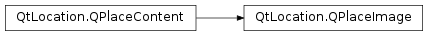

QPlaceImage¶
Synopsis¶
Functions¶
- def
imageId() - def
mimeType() - def
setImageId(identifier) - def
setMimeType(data) - def
setUrl(url) - def
url()
Detailed Description¶
The
PySide2.QtLocation.QPlaceImageclass represents a reference to an image.Each
PySide2.QtLocation.QPlaceImagerepresents a set of metadata about an image such as it’s url, identifier and MIME type. These are properties in addition to those provided byPySide2.QtLocation.QPlaceContent.Note: The Places API only supports images as ‘retrieve-only’ objects. Submitting images to a provider is not a supported use case.
See also
-
class
PySide2.QtLocation.QPlaceImage¶ -
class
PySide2.QtLocation.QPlaceImage(other) Parameters: other – PySide2.QtLocation.QPlaceContentConstructs an new
PySide2.QtLocation.QPlaceImage.Constructs a copy of
otherif possible, otherwise constructs a default image.
-
PySide2.QtLocation.QPlaceImage.imageId()¶ Return type: unicode Returns the image’s identifier.
-
PySide2.QtLocation.QPlaceImage.mimeType()¶ Return type: unicode Returns the image’s MIME type.
-
PySide2.QtLocation.QPlaceImage.setImageId(identifier)¶ Parameters: identifier – unicode Sets image’s
identifier.
-
PySide2.QtLocation.QPlaceImage.setMimeType(data)¶ Parameters: data – unicode Sets image’s MIME
type.
-
PySide2.QtLocation.QPlaceImage.setUrl(url)¶ Parameters: url – PySide2.QtCore.QUrlSets the image’s
url.See also
-
PySide2.QtLocation.QPlaceImage.url()¶ Return type: PySide2.QtCore.QUrlReturns the image’s url.
© 2018 The Qt Company Ltd. Documentation contributions included herein are the copyrights of their respective owners. The documentation provided herein is licensed under the terms of the GNU Free Documentation License version 1.3 as published by the Free Software Foundation. Qt and respective logos are trademarks of The Qt Company Ltd. in Finland and/or other countries worldwide. All other trademarks are property of their respective owners.